●プロトタイプ版キャラクター●
クリックすると大きな画像を見ることができます|
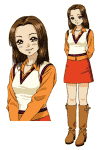
あゆみ |
 なつき |
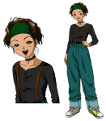
花 |
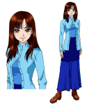
真琴 |
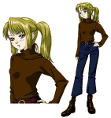
きいろ |
|
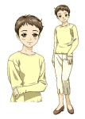
雫 |
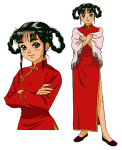
メイファ |
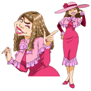
麗香 |
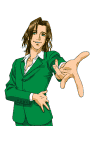
アルフォンソ |
{kind=link}
{kind=link}
{kind=link}
{kind=link}
{kind=link}
{kind=link}
{kind=link}
{kind=link}
{kind=link}
●キャラクターデザインのうつりかわり●
| 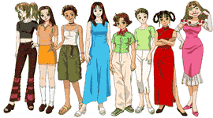 |
～キャラクター第一稿～ これがいちばん最初の キャラクターデザインです。 みんな大学１年生という 設定のため、ちょっと オトナっぽいです。 頭身や雰囲気など、 試行錯誤のアトが 見うけられます。 |
▼
| 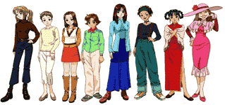 |
～プロトタイプ版～ ゲームの舞台が 「大学１年の夏休み」 から「秋の大学祭」に 変わったため、 服装が秋服に。 プロトタイプ版は このデザインで 製作されました。 |
▼
| 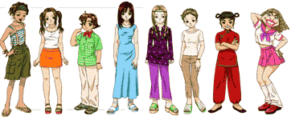 |
～製品版第一稿～ 製品版の開発が始まり、 キャラクターの年齢を 大学１年生から 高校１年生に変更。 頭身がちょっと 下がりました。 あゆみと麗香は まだ色が白いです。 |
▼
| 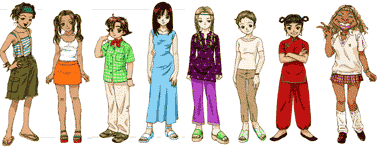 |
～製品版決定デザイン～ あゆみと麗香が コギャルっぽくなり、 現在のデザインに なりました。 ライバルキャラは かなりアトのほうに 完成しました。 |
◆キャラクターデザイン担当 柴田からのコメント◆
こうやって並べられるとかなり恥ずかしいものがありますね。私の参加が決まった時点では既に企画の中村女史の中には
キャラの方向性がかなりはっきり決まっていたようなので、
「その頭の中にあるイメージをどれだけ具現化できるか」が、
私の最大の課題でした。
第一稿の頃は「とりあえず描いてみました」って感じです。
絵柄もバラバラで、どんな絵を求められているのか、手探り状態でした。
プロト版は、第一稿をもとに細かな注文を言われるままに直したものです。
季節の設定も秋になり、服装も変わったのですが、個人的には気に入ってます。
この時までは大学生という設定なのですが、製品版より子供っぽく見えますね。
眼とか無理やり大きくしましたって感じで、絵がギコチないです。
製品版では再び夏服になりました。等身も少しさげましたが、
逆にリアルな等身になったかな。
絵柄的にはプロト版とあまり変えるつもりはなかったのですが、
手に馴染んだ分、多少は見られるものになったと思います。
設定作業終了のドタンバで、麗香とあゆみの修正が入ったのですが、
これは正解でした。製品版の麗香は結構気に入ってます。
他人の頭の中にあるイメージを描き出す
（自分の頭の中のイメージもきちんと描けないのに）
という仕事に初めて真正面から取り組んで、何とか形にしてみましたが、
サウンド、メッセージやシステムに支えられているからこそ、
キャラが立ったかなって感じです。
すべてのスタッフに感謝します。
あとはユーザーのみなさまの審判を仰ぐだけです。
| ギャラリーにもどる |